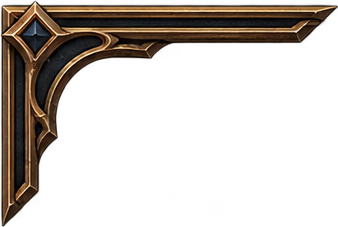
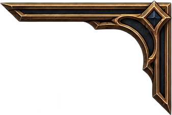
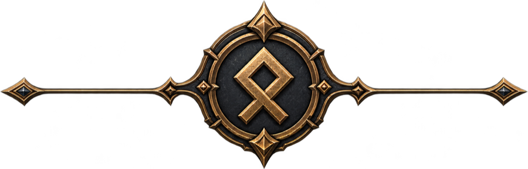
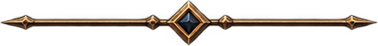

Last warlock standing wins the round. The lava is patient.
No server here, by design! You either:
OpenWarlock is open source and free. There is no monetization of any kind: the creators gain nothing financially. github.com/RemiFabre/OpenWarlock
When you host online you do not rely on a server. You are the server: invite-only private lobbies with your friends, full control in the players' hands. Once the peer-to-peer connection is up, it is a LAN party like the good old days.
The community shapes the game: players ask for changes in plain language and an AI agent codes experimental versions in their name.




One face per warlock. Greyed ones are taken in this lobby.
Click a binding, then press any key. Esc cancels. A key already in use is swapped.
Any key works. If it is taken, the two spells swap. Esc or a click outside cancels.
experimental
Have an idea to improve the game? Write it on GitHub. An AI agent will create a version in your name using your ideas.
📊 OpenWarlock so far
anonymous counters, live from the relay · click anywhere to close